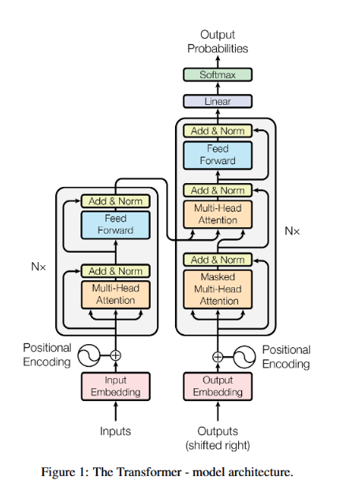
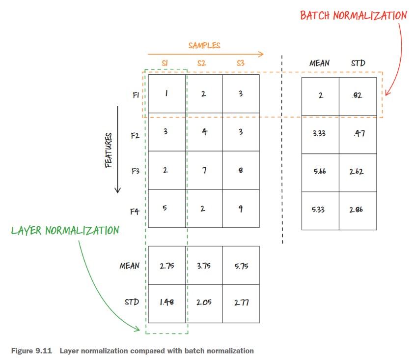

<!DOCTYPE html>


<html lang="zh-CN">


<head>
  <meta name="baidu-site-verification" content="codeva-NSg7ynviLa" />
  <meta charset="utf-8" />
    
  <meta name="viewport" content="width=device-width, initial-scale=1, maximum-scale=1" />
  <title>
    transformer论文学习 |  
  </title>
  <meta name="generator" content="hexo-theme-ayer">
  
  <link rel="shortcut icon" href="/images/mojie.jpg" />
  
  
<link rel="stylesheet" href="/dist/main.css">

  <link rel="stylesheet" href="https://cdn.jsdelivr.net/gh/Shen-Yu/cdn/css/remixicon.min.css">
  
<link rel="stylesheet" href="/css/custom.css">

  
  <script src="https://cdn.jsdelivr.net/npm/pace-js@1.0.2/pace.min.js"></script>
  
  

  

<link rel="alternate" href="/atom.xml" title="null" type="application/atom+xml">
</head>

</html>

<body>
  <div id="app">
    
      
    <main class="content on">
      <section class="outer">
  <article
  id="post-transformer论文学习"
  class="article article-type-post"
  itemscope
  itemprop="blogPost"
  data-scroll-reveal
>
  <div class="article-inner">
    
    <header class="article-header">
       
<h1 class="article-title sea-center" style="border-left:0" itemprop="name">
  transformer论文学习
</h1>
 

    </header>
     
    <div class="article-meta">
      <a href="/posts/ba80fddd/" class="article-date">
  <time datetime="2026-11-10T06:36:36.000Z" itemprop="datePublished">2026-11-10</time>
</a>   
<div class="word_count">
    <span class="post-time">
        <span class="post-meta-item-icon">
            <i class="ri-quill-pen-line"></i>
            <span class="post-meta-item-text"> 字数统计:</span>
            <span class="post-count">8.1k</span>
        </span>
    </span>

    <span class="post-time">
        &nbsp; | &nbsp;
        <span class="post-meta-item-icon">
            <i class="ri-book-open-line"></i>
            <span class="post-meta-item-text"> 阅读时长≈</span>
            <span class="post-count">29 分钟</span>
        </span>
    </span>
</div>
 
    </div>
      
    <div class="tocbot"></div>


  
    <div class="article-entry" itemprop="articleBody">
       
  <p>通过B站视频学习《attention is all you need》论文，终于学会了。</p>
<span id="more"></span>
<p>网页2的B站视频很详细，主要看的这个。</p>
<p>网页3的B站视频可以了解一些 transformer 作者们的八卦历史信息。</p>
<p>网页4是另一套视频课程。</p>
<h1 id="背景-rnn与transformer">背景-RNN与transformer</h1>
<p>RNN 有2大缺点：</p>
<ol type="1">
<li>容易遗忘早期数据</li>
<li>顺序计算，不能并行计算</li>
</ol>
<p>虽然RNN的解码器中也可以加入注意力机制来缓解遗忘早期数据的问题，但是不能并行计算还是无解的，这就导致RNN不能使用GPU加速。</p>
<p>transformer 架构只基于注意力机制，完全抛弃了 RNN 模型，并且可以并行计算。</p>
<h1 id="transformer架构">transformer架构</h1>
<p>transformer 论文中的模型架构如下</p>
<p></p>
<h1 id="解码器与编码器">解码器与编码器</h1>
<p>这里这个架构是为了<strong>语言翻译</strong>任务设置的，有2大块构成</p>
<ul>
<li>编码器（encoder）：图中左边这部分，编码器由 N = 6 个相同的层堆叠而成。每一层包含两个子层，第一个是多头自注意力机制，第二个是一个简单的全连接前馈网络。我们在每个子层周围引入残差连接和层归一化层。也就是说，每个子层的输出为 LayerNorm(x + Sublayer(x))，其中 Sublayer(x) 是该子层自身实现的函数。为了便于进行残差连接，模型中的所有子层以及嵌入层均生成维度为 <span class="math inline">\(d_{model} = 512\)</span> 的输出。</li>
<li>解码器（decoder）：解码器同样由 N = 6 个相同的层堆叠而成。除了每个编码器层中的两个子层外，解码器还插入了一个第三子层，用于对编码器堆栈的输出执行多头注意力机制。与编码器类似，我们在每个子层周围引入残差连接，然后进行层归一化。此外，我们对解码器堆栈中的自注意力子层进行了修改，以防止位置在注意力时关注后续位置。这种掩码机制，加上输出嵌入向量被偏移一个位置的事实，确保了第 i 个位置的预测结果只能依赖于小于 i 的已知输出位置。</li>
</ul>
<p>注意图中左右两块都有 <code>Nx</code> 的表示，就是说相应的模块<strong>顺序连接</strong>N个（论文中 N = 6）。之所以可以顺序连接，是因为这里输出和输入的维度相同，均为 512 。</p>
<p>这里其实是由几个重复出现的子模块组成的，下面分别进行介绍</p>
<h1 id="词嵌入和位置编码">词嵌入和位置编码</h1>
<p>输入那一块：在训练数据中，左边的 input 就是要翻译的句子（如“我爱水课”），右边的 ouyput 就是提供好的理想翻译结果（如“I love easy course”），然后对输入数据进行分词（分词 tokenization 就是拆分为 词元 token），然后词嵌入（现在的大模型一般也就是将词嵌入的矩阵也作为训练参数一块训练，这样效果更好），这两步都是常规做法。</p>
<p>但是这种并行化处理的数据没有保存 token 在句子中的位置信息，因此这里创新增加了一个<strong>位置编码</strong>，对每一个 token 生成一个与 <span class="math inline">\(d_{model}\)</span> 相同维度（这里是 512）的向量，然后与<strong>词嵌入向量直接相加</strong>（没错，这里就是两个向量直接相加），通过这种方式注入位置信息。</p>
<p>论文中的位置编码向量（Positional Encoding）是通过下面的正弦余弦函数获得的：
<span class="math display">\[
\begin{align*}
PE_{(pos, 2i)} &amp;= \sin\left(pos / 10000^{2i / d_{\text{model}}}\right) \\
PE_{(pos, 2i+1)} &amp;= \cos\left(pos / 10000^{2i / d_{\text{model}}}\right)
\end{align*}
\]</span>
其中（公式看懂了，但是没太看懂为什么用这个公式，不过貌似现在用的都是可训练的位置编码了）：</p>
<ul>
<li><strong>分子 <span class="math inline">\(pos\)</span></strong> ：词在句子中的绝对位置（从 0 开始，如第1个词是0，第2个词是1）。</li>
<li><strong><span class="math inline">\(i\)</span></strong>：向量维度的索引（<span class="math inline">\(i=0,1,...,d/2-1\)</span>）。</li>
<li><strong><span class="math inline">\(2i\)</span> 和 <span class="math inline">\(2i+1\)</span></strong>：公式巧妙地<strong>区分了奇偶维度</strong>。偶数维（0, 2, 4…）使用 <strong>正弦（sin）</strong>，奇数维（1, 3, 5…）使用 <strong>余弦（cos）</strong>。这使得不同维度拥有不同的波长。</li>
<li><strong>分母 <span class="math inline">\(10000^{\frac{2i}{d_{\text{model}}}}\)</span></strong>：这是一个<strong>指数衰减的基准频率</strong>。当 <span class="math inline">\(i\)</span> 较小时，频率很高（波长很短），数值在维度间变化剧烈；当 <span class="math inline">\(i\)</span> 较大时，频率很低（波长很长），数值变化平缓。这就像给位置信息打上了不同频率的“波”标签。</li>
</ul>
<p>位置编码之所以要用这种看上去比较复杂的形式，是因为我们同样要通过位置编码向量的点积来获得不同位置的相对关系，因此不能直接用 0、1、2这种直接编码的方式。</p>
<h2 id="为什么需要位置编码">为什么需要位置编码？</h2>
<p>疑问：词嵌入本身不就是按照token的顺序得到的输入吗？为什么还需要单独加入位置编码？</p>
<p>因为你“按顺序把 token 放进去”，不代表模型“知道顺序”。Transformer 在计算时，会把你的句子当成一袋没有先后关系的向量。关键原因在于，<strong>Self-Attention 是「排列不变友好」的</strong>。</p>
<hr />
<p>回顾一下注意力机制的权重计算方式</p>
<figure class="highlight python"><table><tr><td class="gutter"><pre><span class="line">1</span><br></pre></td><td class="code"><pre><span class="line">attn = q @ k.transpose(<span class="number">1</span>, <span class="number">2</span>)</span><br></pre></td></tr></table></figure>
<ul>
<li>query₁ 和 key₀ 点积</li>
<li>query₁ 和 key₁ 点积</li>
<li>query₁ 和 key₂ 点积</li>
</ul>
<p>👉 <strong>Attention 只问一个问题：</strong></p>
<blockquote>
<p>“我的内容和你的内容有多像？”</p>
</blockquote>
<p>它从来不问：</p>
<blockquote>
<p>“你是第几个？”</p>
</blockquote>
<h3 id="举个具体例子">举个具体例子</h3>
<p>假设有两个句子，token 相同但顺序不同：</p>
<figure class="highlight text"><table><tr><td class="gutter"><pre><span class="line">1</span><br><span class="line">2</span><br></pre></td><td class="code"><pre><span class="line">A = [猫, 追, 老鼠]</span><br><span class="line">B = [老鼠, 追, 猫]</span><br></pre></td></tr></table></figure>
<p>Embedding 后：</p>
<ul>
<li>A 里有向量：x₀=猫, x₁=追, x₂=老鼠</li>
<li>B 里有向量：x₀=老鼠, x₁=追, x₂=猫</li>
</ul>
<p>Attention 矩阵是这样算的：</p>
<figure class="highlight plaintext"><table><tr><td class="gutter"><pre><span class="line">1</span><br><span class="line">2</span><br><span class="line">3</span><br><span class="line">4</span><br><span class="line">5</span><br><span class="line">6</span><br><span class="line">7</span><br></pre></td><td class="code"><pre><span class="line">A: 猫·猫  猫·追  猫·老鼠</span><br><span class="line">   追·猫  追·追  追·老鼠</span><br><span class="line">   老鼠·猫 ...</span><br><span class="line"></span><br><span class="line">B: 老鼠·老鼠  老鼠·追  老鼠·猫</span><br><span class="line">   追·老鼠    追·追    追·猫</span><br><span class="line">   猫·老鼠 ...</span><br></pre></td></tr></table></figure>
<p>你会发现：<strong>B 的注意力矩阵，就是把 A 的行和列重新排列了一下</strong>。</p>
<p>Transformer 并不知道“猫本来在第一位”，它只看到向量集合 <code>{猫, 追, 老鼠}</code>。</p>
<p>这在数据上叫做 Permutation Equivariance</p>
<ul>
<li>你把输入 token 的顺序洗牌（shuffle）</li>
<li>Attention 的输出也会跟着同样洗牌</li>
<li>模型<strong>不会报错，也不会察觉“不对劲”</strong></li>
</ul>
<p>而 RNN/LSTM 不一样，它们是“一步一步算”的，天然带时间轴。</p>
<h3 id="不加位置编码会怎么样">不加位置编码会怎么样？</h3>
<ul>
<li>模型只能学到：
<ul>
<li>哪些词经常一起出现（共现统计）</li>
<li>但学不到“语法结构”</li>
</ul></li>
<li>比如：
<ul>
<li>“苹果 吃 我” 和 “我 吃 苹果”</li>
<li>模型会认为意思差不多 😂</li>
</ul></li>
</ul>
<p>实验证明：去掉位置编码，BLEU 分数会直接崩掉。位置编码是人为注入的“第几步”信息，否则它就只是个 Bag-of-Words 加强版。</p>
<h2 id="词嵌入和位置编码举例">词嵌入和位置编码举例</h2>
<p>输入的“我爱水课”和输出的““I love easy course”” 通过词嵌入和位置编码后，每个 token 均会转为一个 512 维度的向量。</p>
<p>这两步的意义为：</p>
<ul>
<li>词嵌入：获得 token 的语义信息</li>
<li>位置编码：获得位置信息</li>
</ul>
<p>但是<strong>同一个单词其实在不同的上下文语境中的含义其实是不同的</strong>。比如“水”这个字，在“水课”和“西瓜水”这两个例子中的含义完全不同，一个表示容易的意思，一个表示一氧化二氢。</p>
<p>因此下面我们<strong>通过注意力机制将上下文信息加入到 token 的信息中</strong>，下面介绍注意力机制。</p>
<h1 id="多头注意力机制---核心">多头注意力机制 - 核心</h1>
<p>首先看注意力机制，再看多头，其实所谓的多头就是<strong>并行</strong>跑多个相同结构的注意力模块，最后将所有模块输出结果堆叠成一个结果。</p>
<h1 id="注意力机制">注意力机制</h1>
<p>图中的三个箭头对应注意力的3个权重矩阵 <span class="math inline">\(W_Q\)</span> ， <span class="math inline">\(W_K\)</span>， <span class="math inline">\(W_V\)</span> （这三个矩阵的值也是模型训练中得到的）。这3个矩阵的维度均为 <span class="math inline">\(512×512\)</span> 。这三个矩阵的下标缩写分别对应<strong>查询（Query）、键（Key）、值（Value）</strong>。这三个术语借鉴自信息检索系统。当你在谷歌搜索时，搜索引擎会把你的查询（query，即搜索词）与一组键（key，即被索引的网页）进行匹配，然后返回最相关的值（value，即搜索结果）。</p>
<p>更具体地解释这三个组件：</p>
<ul>
<li><strong>Query（查询）</strong>——表示我们在序列的每个位置上”正在找什么”。</li>
<li><strong>Key（键）</strong>——表示序列每个位置上”有什么可能被匹配到的信息”。</li>
<li><strong>Value（值）</strong>——当查询和键匹配成功时，实际被提取出来的内容。</li>
</ul>
<p>然后我们用“水”这个词为例，用“水”的词嵌入向量分别与这三个权重矩阵进行矩阵乘法（如 <span class="math inline">\(\boldsymbol{xW_{q}}\)</span>），得到 3 个 <span class="math inline">\(1 \times 512\)</span> 维度的向量，分别为 <span class="math inline">\(\text{水}_q\)</span> ，<span class="math inline">\(\text{水}_k\)</span>， <span class="math inline">\(\text{水}_v\)</span> 。 当然，这里其实每一个 token 都会得到这3个“分身”向量，合并在一块就得到了 Q，K，V 矩阵。</p>
<p>这里的 q , k, v 怎么理解呢？举个例子，q 是问题，k 是每个token 基于这个问题的关键词，v 其实还是这个token的信息向量。比如，水q 的提问是“你是名词吗？”，那么每个token基于这个问题会给出 yes 或 no 的回答，这就是 k 向量（4个字的答案分别为 no ，no, yes, yes）。然后我们用 q 和 每个 token 的 k 矩阵进行点积，如果是名词，点积的值就越大，反之就越小。然后进行缩放（为了不出现梯度消失），然后采用 <code>softmax</code> 函数转为和为1的值，这样就得到了最终的权重。这个权重就是所有 token 对于当前水这个词的影响的重要程度（也包含水这个词自己本身）。然后得到这个权重之后，再与 V 做矩阵乘法，也就是一个加权平均，也就是</p>
<figure class="highlight plaintext"><table><tr><td class="gutter"><pre><span class="line">1</span><br></pre></td><td class="code"><pre><span class="line">水的新向量 = 权重1 * 我v + 权重2 * 爱v + 权重3 * 水v + 权重4 * 课v </span><br></pre></td></tr></table></figure>
<p>因此，这里有可能最后2个字 “水” 和 “课” 对 水的影响比较大，这就会导致得到的水的全新向量向“课”的反向进行一定的偏转。这个过程就是所谓的综合上下文的信息。</p>
<p>通过这个方式，输出和输入的维度是一样的。输入是4个 1×512 的向量，输出也是4个 1×512 的编码了上下文信息的新向量。</p>
<h2 id="缩放">缩放</h2>
<p>在Transformer论文《Attention Is All You Need》的经典注意力公式中：</p>
<p><span class="math display">\[
\text{Attention}(Q, K, V) = \text{softmax}\left(\frac{QK^T}{\sqrt{d_k}}\right)V
\]</span></p>
<p><strong><span class="math inline">\(d_k\)</span> 代表的是“键（Key）向量的维度”，也就是你输入序列中每个位置经过线性变换后，所得到的向量的长度（特征数）。</strong></p>
<p>在原始Transformer论文中，整个模型的隐藏层维度设为 <span class="math inline">\(d_{\text{model}} = 512\)</span>。由于论文使用的是<strong>多头注意力（Multi-Head Attention）</strong>，且默认设置了 <span class="math inline">\(h=8\)</span> 个头。</p>
<p>为了计算每个头，需要把总维度切分：
<span class="math display">\[
d_k = d_{\text{model}} / h = 512 / 8 = 64
\]</span></p>
<p>所以，在原始论文中，<strong><span class="math inline">\(d_k\)</span> 的数值是 64</strong>。这意味着，在每个注意力头里，每个单词的查询（Q）和键（K）向量都是 64 维的浮点数。</p>
<hr />
<h3 id="为什么要除以-sqrtd_k---梯度消失">为什么要除以 <span class="math inline">\(\sqrt{d_k}\)</span> ？- 梯度消失</h3>
<p>这是面试中最常追问的点。公式中分母有一个 <span class="math inline">\(\sqrt{d_k}\)</span>，而不是直接除以 <span class="math inline">\(d_k\)</span>，这是为了<strong>防止梯度消失</strong>。</p>
<ul>
<li><strong>原理</strong>：<span class="math inline">\(Q\)</span> 和 <span class="math inline">\(K\)</span> 的点积运算本质上是向量的内积。如果两个向量是 64 维，且每个维度都是均值为0、方差为1的数据，那么它们的点积结果的<strong>方差就会变成 64</strong>（因为方差会累加）。</li>
<li><strong>后果</strong>：方差变大意味着点积结果会变得很大（比如几十或几百）。当这些很大的数值输入到后面的 <span class="math inline">\(\text{softmax}\)</span> 函数中时，会导致 <span class="math inline">\(\text{softmax}\)</span> 的输出变成一个<strong>独热（One-hot）似的极端分布</strong>（概率极度集中在某个位置，其他位置几乎为0）。</li>
<li><strong>后果的影响</strong>：此时计算出的梯度会无限接近于0，模型参数几乎无法更新（梯度消失）。</li>
<li><strong>解法</strong>：除以 <span class="math inline">\(\sqrt{d_k}\)</span>（即 <span class="math inline">\(\sqrt{64}=8\)</span>），可以将点积结果的方差<strong>缩放回 1</strong>，让 <span class="math inline">\(\text{softmax}\)</span> 的输入保持在梯度敏感的正常范围内（比如 -3 到 3 之间）。</li>
</ul>
<h3 id="缩放的影响">缩放的影响</h3>
<p>缩放（除以 <span class="math inline">\(\sqrt{d_k}\)</span>）和不缩放（直接使用 <span class="math inline">\(QK^T\)</span>）计算出的 Softmax 概率分布<strong>完全不同</strong>。缩放操作本质上是在调整 Softmax 函数的“温度”参数。</p>
<p>为了让你直观地看到区别，我们直接算一笔账：</p>
<p><strong>1. 直观数学对比（假设 <span class="math inline">\(d_k=64\)</span>）</strong></p>
<p>假设在计算某个 Query 和所有 Keys 的点积后，我们得到的原始分数（Logits）是：
<code>[10, 0, 0]</code>（即第一个词与当前词极度相关，另外两个词毫不相关）。</p>
<ul>
<li><p><strong>情况 A：不缩放（直接 Softmax）</strong>
<span class="math display">\[
\text{Softmax}([10, 0, 0]) = \frac{[e^{10}, e^{0}, e^{0}]}{\sum}
\]</span>
计算结果约为：<code>[0.9999, 0.00005, 0.00005]</code>
-&gt; <strong>分布极度尖锐</strong>，几乎成了 One-hot（独热），模型几乎完全忽视另外两个词。</p></li>
<li><p><strong>情况 B：缩放（除以 <span class="math inline">\(\sqrt{d_k} = 8\)</span>）</strong>
分数变成：<code>[10/8, 0, 0] = [1.25, 0, 0]</code>
<span class="math display">\[
\text{Softmax}([1.25, 0, 0]) = \frac{[e^{1.25}, e^{0}, e^{0}]}{\sum}
\]</span>
计算结果约为：<code>[0.78, 0.11, 0.11]</code>
-&gt; <strong>分布变得平缓</strong>，虽然第一个词依然最重要，但另外两个词也保留了超过 20% 的关注度权重。</p></li>
</ul>
<hr />
<p><strong>2. 为什么说“本质不同”？</strong></p>
<p>从数学上看，Softmax 函数对输入具有<strong>尺度敏感性</strong>。它并不是线性函数，因此：</p>
<ul>
<li><strong>不缩放</strong>：输入值很大（因为 <span class="math inline">\(Q\)</span> 和 <span class="math inline">\(K\)</span> 的维度相乘导致方差变大），Softmax 会落入<strong>饱和区</strong>，输出概率极度极端。</li>
<li><strong>缩放后</strong>：输入值被拉回均值为0、方差为1的标准范围，Softmax 处于<strong>梯度敏感区</strong>，输出概率相对平滑。</li>
</ul>
<p>如果缩放和不缩放计算出的概率一样，那只有当所有输入分数完全相同（如全为0），或者缩放系数恰好为1时才成立，但这在实际情况中几乎不可能。</p>
<hr />
<p><strong>3.用“温度”来理解（你的直觉校准）</strong></p>
<p>你甚至可以理解为：<strong>不缩放</strong>相当于将 Softmax 的“温度参数”设为 <span class="math inline">\(T=1\)</span>，而<strong>缩放</strong>相当于把温度设为 <span class="math inline">\(T=\sqrt{d_k}\)</span>（即 8）。</p>
<ul>
<li><strong>高温（缩放后）</strong>：概率分布更平滑，模型能够“兼听则明”，关注到上下文中的次要信息。</li>
<li><strong>低温（不缩放）</strong>：概率分布更尖锐，模型几乎只盯着最相似的那个词看，忽略了其他上下文。</li>
</ul>
<h3 id="引申softmax-的梯度">引申：Softmax 的梯度</h3>
<p><strong>一、Softmax 定义</strong></p>
<p>对向量 <span class="math inline">\(\mathbf{z} = (z_1, \dots, z_n)\)</span>：
<span class="math display">\[
p_i = \text{softmax}(z_i) = \frac{e^{z_i}}{\sum_{j=1}^{n} e^{z_j}}
\]</span>
记 <span class="math inline">\(\mathbf{p} = \text{softmax}(\mathbf{z})\)</span>，显然 <span class="math inline">\(p_i &gt; 0\)</span> 且 <span class="math inline">\(\sum_i p_i = 1\)</span>。</p>
<p><strong>二、Softmax 的梯度（雅可比矩阵）</strong></p>
<p>对 <span class="math inline">\(p_i\)</span> 关于 <span class="math inline">\(z_j\)</span> 求偏导：
<span class="math display">\[
\frac{\partial p_i}{\partial z_j} = 
\begin{cases}
p_i(1 - p_i), &amp; i = j \\
-p_i p_j, &amp; i \neq j
\end{cases}
\]</span>
这就是 softmax 的<strong>逐元素梯度公式</strong>。</p>
<p><strong>三、矩阵（雅可比）形式</strong></p>
<p>把所有偏导数排成矩阵 <span class="math inline">\(\frac{\partial \mathbf{p}}{\partial \mathbf{z}} \in \mathbb{R}^{n \times n}\)</span>：
<span class="math display">\[
\frac{\partial \mathbf{p}}{\partial \mathbf{z}}
= \operatorname{diag}(\mathbf{p}) - \mathbf{p} \mathbf{p}^{\top}
\]</span>
其中：</p>
<ul>
<li><span class="math inline">\(\operatorname{diag}(\mathbf{p})\)</span>：把 <span class="math inline">\(p_i\)</span> 放在对角线上</li>
<li><span class="math inline">\(\mathbf{p}\mathbf{p}^{\top}\)</span>：外积，第 <span class="math inline">\((i,j)\)</span> 元素是 <span class="math inline">\(p_i p_j\)</span></li>
</ul>
<p>✅ 这个公式在 PyTorch / TensorFlow 的 autograd 内部就是这么用的。</p>
<p><strong>四、梯度大小的行为</strong></p>
<ul>
<li>当 <span class="math inline">\(p_i \approx 1\)</span>：<span class="math inline">\(\partial p_i/\partial z_i = p_i(1-p_i) \approx 0\)</span> → <strong>梯度消失</strong></li>
<li>当 <span class="math inline">\(p_i \approx 0.5\)</span>（且 n=2）：<span class="math inline">\(\partial p_i/\partial z_i = 0.25\)</span> → <strong>梯度最大</strong></li>
</ul>
<p>这就是为什么当 <span class="math inline">\(\text{softmax}\)</span> 的输出变成一个<strong>独热（One-hot）似的极端分布</strong>时，梯度会消失，因此才需要进行缩放。</p>
<h2 id="多头的含义">多头的含义</h2>
<p>首先输入是4个 1×512 的向量，但是这个时候的权重矩阵不再是 512×512 ，而是变成了 512×64，因此此时向量和权重矩阵相乘得到的 q,k,v 向量维度是 1×64 ，Q,K,V 矩阵就是 4×64 ，注意力机制的输出也是 4×64 （单个向量维度变成 64）。</p>
<p>这里所谓多头，这里我们有 8 组这样的注意力模块，也就是 8组Q,K,V 权重矩阵，因此我们得到了 8组 4×64 的的结果。最后我们将这8组结果<strong>拼接</strong>（concat），就又得到了 4×512 的结果。</p>
<h3 id="多头的作用">多头的作用</h3>
<p>多头注意力使模型能够在不同位置同时关注来自不同表示子空间的信息。而使用单个注意力头时，平均化会抑制这种能力。</p>
<p>也就是不同的头关注的点不一样，用我们的例子来说，就是用多头时，不同的注意力头能提出多个不一样的问题，比如是不是名词，褒贬义等等。</p>
<p>由于每个头的维度减小，总计算成本与全维度单头注意力相似。也就是单头和多头的计算量差不多（按照数学公式来说是一样的，但是由于要单独训练，我感觉多头的训练计算量要大一点；推理是完全一样的）。</p>
<h2 id="解码器的特殊之处">解码器的特殊之处</h2>
<h3 id="第一个多头注意力层---掩码">第一个多头注意力层 - 掩码</h3>
<p>解码层第一个多头注意力层多了一个掩码（MASK）的功能，掩码（Mask）是确保模型“不 cheating（作弊）”的核心机制。根据这个掩码的功能，这个掩码又叫做<strong>因果掩码</strong>（Causal masking）</p>
<p><strong>Transformer的解码器是“自回归（Auto-regressive）”的，其核心约束是：在预测第 t 个位置的输出（即预测下一个词 <span class="math inline">\(y_{t+1}\)</span>）时，绝对不允许使用第 t+1 个及以后（未来）位置的信息。</strong></p>
<p>但在我们之前讲的<strong>自注意力机制</strong>中，计算某个词时会自动计算它与<strong>句子中所有词</strong>（包括未来的词）的相关性得分。如果在训练时让解码器看到了完整的目标句子（Ground Truth），那模型就相当于考试时提前看了答案，它学不会真正的推理能力。</p>
<h4 id="掩码怎么做">掩码怎么做？</h4>
<p>就是将初步计算得到的原始注意力权重矩阵 <span class="math inline">\(QK^T\)</span> 的上三角元素全部改为 <code>-inf</code> ，即负无穷。</p>
<p>这样，这些位置在后续 softmax 时概率会变为 0（因为 exp(-inf) = 0），从而实现屏蔽未来信息。</p>
<p>假如掩码后：<strong>位置 0 只能看到自己（不能看到位置 1），位置 1 可以看到自己以及位置 0</strong>。这正是自回归生成所需要的“未来不可见”约束。</p>
<p>举个例子，假如总共有4个token，ABCD。在真实世界里（推理时），它是串行的：先有 A，猜出 B；有了 A、B，再猜 C；有了 A、B、C，再猜 D。</p>
<p>通过掩码，我们强行把 ABCD 变成 4 个独立的任务，就像真实实际推理那样。如下表（实际项目应该是有<strong>开始符</strong>和<strong>结束符</strong>的，A 正常应该是人为设置的开始符）</p>
<table>
<colgroup>
<col style="width: 11%" />
<col style="width: 28%" />
<col style="width: 24%" />
<col style="width: 35%" />
</colgroup>
<thead>
<tr>
<th>时间步</th>
<th>模型看到的上下文（输入 X）</th>
<th>要预测的目标（标签 Y）</th>
<th>对应你例子中的描述</th>
</tr>
</thead>
<tbody>
<tr>
<td><strong>位置 0</strong></td>
<td><code>[A]</code>（只看第1个）</td>
<td><strong>B</strong></td>
<td>“查看 A 的信息预测 B” ✅</td>
</tr>
<tr>
<td><strong>位置 1</strong></td>
<td><code>[A, B]</code>（看前2个）</td>
<td><strong>C</strong></td>
<td>“查看 AB 的信息预测 C” ✅</td>
</tr>
<tr>
<td><strong>位置 2</strong></td>
<td><code>[A, B, C]</code>（看前3个）</td>
<td><strong>D</strong></td>
<td>（对应你例子中 AB-&gt;C，逻辑顺延）</td>
</tr>
<tr>
<td><strong>位置 3</strong></td>
<td><code>[A, B, C, D]</code>（看前4个）</td>
<td><strong>E</strong>（或结束符）</td>
<td></td>
</tr>
</tbody>
</table>
<h4 id="掩码的作用---并行">掩码的作用 - 并行</h4>
<p>掩码的作用就是为了训练的时候能够并行。</p>
<p>这就是 Transformer 相比 RNN 最革命性的进步。</p>
<ul>
<li><strong>RNN（循环神经网络）</strong>：必须老老实实先算 A→B，再算 AB→C，再算 ABC→D。<strong>串行</strong>，无法利用 GPU 并行，速度慢。</li>
<li><strong>Transformer（带掩码）</strong>：<strong>一次性</strong>把完整的 ABCD 矩阵扔进去，通过掩码矩阵把未来的位置遮住。GPU 可以在同一时刻并行计算出 <strong>4 个位置的损失</strong>。</li>
</ul>
<p><strong>核心逻辑</strong>：掩码的存在，使得“并行输入”不会导致“信息泄露”，从而实现了 <strong>“训练时并行，推理时串行”</strong> 的完美解耦。</p>
<h4 id="模型推理时怎么做">模型推理时怎么做？</h4>
<p>首先，<strong>因果掩码的原则在推理过程中必须始终遵守。</strong> 但是，在<strong>实际的工程实现（标准推理）中，我们通常不需要显式地创建一个下三角掩码矩阵</strong>。</p>
<p>在实际的高效推理（如 GPT、LLaMA）中，我们不会每次都把整个历史序列重新输入模型，而是使用 <strong>KV 缓存（KV Cache）</strong>。</p>
<ul>
<li><p><strong>训练时（带掩码）</strong>：
输入完整序列 <code>[A, B, C, D]</code>，计算所有位置对之间的注意力分数（4x4 矩阵），然后用下三角矩阵把右上角全部遮住。</p></li>
<li><p><strong>推理时（带 KV 缓存）</strong>：
模型是一个一个词往外蹦的。当我们要生成第 4 个词 <code>D</code> 时，<strong>我们只把最新的词 C 作为 Query（查询）送进去</strong>，而 Key 和 Value 则来自之前缓存好的 <code>[A, B, C]</code>。</p>
<p><strong>关键点来了</strong>：
因为此时 <strong>Query 只有一个向量</strong>（代表当前的 <code>C</code>），而 Key/Value 都是过去的旧词。计算注意力分数时，矩阵形状是 <code>1 × 序列长度</code>（一行 vs 多列）。</p>
<ul>
<li>这种情况下，<strong>没有“未来位置”可以看</strong>，因为当前这一步只有一个 Query，它只能看过去的键值。所以，<strong>显式的下三角掩码矩阵在数学上完全多余</strong>，直接去掉不写就能获得完全相同的效果。</li>
</ul></li>
</ul>
<p>我的理解如下，我们捋一下，按照一般的思路：</p>
<ul>
<li>输入第一个字符 A ，推理过程中会生成 A 的所有需要 q,k,v 向量信息，预测得到 B ；</li>
<li>第二次输入字符A和B，推理过程中生成 A 和 B 的所有需要 q,k,v 向量信息，预测得到 C。这里有2个细节：
<ol type="1">
<li>这里要采用掩码，因此字符 A 的q,k,v 向量信息和第一次推理时完全一样，不会改变，因为掩码的存在或者说不泄露原则，字符A看不到未来字符的信息，其他同理</li>
<li>字符 A 的q向量没用，因为我们不再需要字符A的下个字符的预测结果了（包括中间结果，中间结果也是第一步已经得到的，只要保存好即可）</li>
</ol></li>
<li>第三次输入字符A，B 和 C，预测得到 D 。同理，这里 A和B的q,k,v 向量信息不变，C的q,k,v 向量信息都是这一次新生成得到的。</li>
</ul>
<p>根据这个推理过程，我们只需要保存历史序列的 k 和 v 信息，就可以快速推理新字符的结果，改进如下</p>
<ul>
<li>第一次推理同上，保留字符 A 的所有 k, v 向量信息</li>
<li>第二次推理输入字符 B ，生成字符 B 的所有 q,k,v 向量。注意力机制中，利用字符 B 的 q 向量，与 A 和 B 的 k 向量做点积等计算，等到注意力权重矩阵，再去 A 和 B 的 v 向量做加权和得到字符 B 的新向量。最终基于字符B的输出结果，得到字符B的预测结果，也就是 C</li>
<li>第三次同理同上</li>
</ul>
<p>因此，我们只需要保存了历史序列的 K 和 V 矩阵信息，我们就只需要使用当前字符的信息就能预测下一个字符。而在这个过程中，我们没有显式利用因果掩码，但是我们始终遵守着因果掩码的原则。即无论如何优化，<strong>“位置 i 只能看到 ≤ i 的位置”</strong>这条铁律在推理时必须和训练时完全一致。</p>
<p>反过来说，如果不做KV缓存，在推理时，你把到目前为止生成的整个序列 <code>[A, B, C]</code> 全部灌进模型（不缓存），那么模型会计算出 <code>3x3</code> 的注意力矩阵。这时候，<strong>你必须显式加上因果掩码</strong>，否则 <code>A</code> 会看到 <code>B</code> 和 <code>C</code>（属于未来），导致预测出错。</p>
<h3 id="第二个多头注意力层">第二个多头注意力层</h3>
<p>这里 K 和 V 来自于编码器，也就是对编码器的输出乘以两个权重矩阵得到 K 和 V 。</p>
<p>这里的 Q 来自于解码器自身。</p>
<h3 id="线性层和softmax层">线性层和softmax层</h3>
<p>这两个作用是将解码器的输出结果转为实际预测的单词。</p>
<p>首先前面第二个注意力层的结果还是 4×512 维度，线性层的作用是维度变换，将其从 512 维度转为词表的 30000 维度，值的大小表示词表中每个词的得分。之后再使用 softmax 转为概率。</p>
<h3 id="解码器为什么比编码器多一层注意力层">解码器为什么比编码器多一层注意力层？</h3>
<p>编码器很好理解，就是一个注意力层，后面跟一个前馈神经网络层。前馈网络将多头注意力的低维度的拼接结果转为高纬度结果。</p>
<p>解码器这里则多了一个注意力层，首先是一个掩码自注意力层，更着一个交叉注意力层，最后是前馈神经网络层。这里掩码自注意力层和编码层一样，综合了”输出“的上下文信息（准确地说，只有上文信息）。交叉注意力层就是综合使用编码层的输入信息。前馈网络同上。</p>
<p>这里能不能省略第一个注意层呢？不能，因为我们必须要通过第一个注意力层综合全文信息。比如我们预测D的时候是输入ABC预测D，此时我们要在C中加入A和B的所谓的上下文的信息；如果去掉第一个注意力层，就变成了单独输入C预测D了，这就不对了。</p>
<p>但是如果只有解码器结构，没有编码器的话，那么此时第二个交叉注意力层就没有了。此时，解码器结构只需要一个掩码自注意力层 + 前馈神经网络层即可。</p>
<h1 id="残差连接与层归一化">残差连接与层归一化</h1>
<p>残差连接不必说了，主要就是解决梯度消失问题。</p>
<p>层归一化说一下，我之前以为还是习惯的批归一化，结果发现看错了，论文中是层归一化。</p>
<p>它的计算过程如下：</p>
<ol type="1">
<li><strong>计算均值和方差</strong>：对于输入张量 <code>x</code>（形状为 <code>[Batch, 序列长度, 特征维度]</code>），它会对<strong>每个样本、每个位置</strong>，<strong>独立地</strong>在<strong>最后一维（特征维度）</strong> 上计算均值和方差。</li>
<li><strong>归一化</strong>：用计算出的均值和方差，对该位置上的整个特征向量进行归一化，使其分布接近均值为0、方差为1。</li>
<li><strong>缩放与平移（可学习参数）</strong>：最后，为了保留模型的学习能力，归一化后的结果会乘以一个可学习的缩放参数 <code>γ</code> (gamma) 并加上一个可学习的偏移参数 <code>β</code> (beta)。</li>
</ol>
<p>用公式表示就是：</p>
<p><code>输出 = γ * ( (输入 - 均值) / sqrt(方差 + ε) ) + β</code></p>
<p>这里和层归一化有一点不同</p>
<blockquote>

</blockquote>
<h3 id="批归一化-vs.-层归一化">批归一化 vs. 层归一化</h3>
<p>这两种归一化方法的核心区别在于它们进行标准化操作时所依据的“维度”不同：</p>
<ul>
<li><strong>批归一化（Batch Normalization）</strong>：在一个批次（batch）内，针对<strong>每个特征维度</strong>，计算所有样本在该维度上的均值和方差，然后进行标准化。可以理解为“纵向”归一化。</li>
<li><strong>层归一化（Layer Normalization）</strong>：对于<strong>每个独立的样本</strong>，计算该样本<strong>所有特征维度</strong>上的均值和方差，然后进行标准化。可以理解为“横向”归一化。</li>
</ul>
<p></p>
<h3 id="为什么-transformer-选择层归一化">为什么 Transformer 选择层归一化？</h3>
<p>Transformer 选择层归一化，主要是出于对自然语言处理（NLP）任务特性的考量：</p>
<ol type="1">
<li><p><strong>处理变长序列</strong>：NLP 中的序列长度不一。BatchNorm 依赖于批次维度计算统计量，但不同长度的句子、甚至同一句子中不同位置的词，其统计特性都不同，这使得 BatchNorm 在此场景下并不适用。</p></li>
<li><p><strong>不受批次大小影响</strong>：BatchNorm 的效果依赖于足够大的批次（batch size）来估算稳定的统计量。而层归一化在每个样本内部独立计算，因此不受批次大小的影响，在小批次训练时也更稳定。</p></li>
<li><p><strong>训练与推理行为一致</strong>：BatchNorm 在训练和推理时的行为不同（训练时使用当前批次统计量，推理时使用历史移动平均），这种不一致性可能导致模型在 NLP 任务中表现不佳。层归一化在训练和推理时的计算方式完全相同，行为更稳定、可预测。</p>
<blockquote>
<p><strong>LayerNorm</strong> <strong>推理时的均值和方差</strong>也是现算的，和训练时完全一致。</p>
</blockquote></li>
</ol>
<h3 id="补充说明pre-ln-与-post-ln">补充说明：Pre-LN 与 Post-LN</h3>
<p>值得一提的是，尽管原始论文采用了层归一化，但其在架构中的<strong>具体位置</strong>也存在演变。原始论文图示和描述中，层归一化位于残差连接之后（称为 <strong>Post-LN</strong>）。然而，后续的实践发现，将层归一化放在残差连接之前（称为 <strong>Pre-LN</strong>）能使训练更加稳定。因此，你会在许多现代 Transformer 实现中看到 Pre-LN 的结构。</p>
<h1 id="注意力层后的线形层">注意力层后的线形层</h1>
<p>注意力机制后面跟着一个线性层，线形层同样不改变维度，输出还是 512 维。</p>
<p>为什么要加一个线性层呢？网页2的B站视频的解释是多头注意力输出结果是由 64 维拼接成的，不是天然的 512 维度的结果。通过线性层，将其从 64 维的拼接“低清”结果，转为“高清的” 512 维度。</p>
<p>这个线性层由两个线性变换组成，并在中间加入了ReLU激活函数。
<span class="math display">\[
\mathrm{FFN}(x) = \max(0,\; xW_1 + b_1)\,W_2 + b_2
\]</span></p>
<ul>
<li>第一层线性：<code>nn.Linear(d_model, d_ff)</code>，把 <code>512 → 2048</code></li>
<li>ReLU 激活</li>
<li>第二层线性：<code>nn.Linear(d_ff, d_model)</code>，把 <code>2048 → 512</code></li>
</ul>
<p><strong>“Position-wise” 的含义</strong>：对序列每个位置独立做同一套线性变换（参数跨位置共享，但计算互不干扰），等价于核大小为 1 的逐点卷积。</p>
<p>维度流（base 模型）：
<code>(B, T, 512) → Linear1 → (B, T, 2048) → ReLU → Linear2 → (B, T, 512)</code></p>
<h1 id="为什么使用自注意力">为什么使用自注意力</h1>
<p><strong>自注意力（Self-Attention）</strong>和 <strong>交叉注意力（Cross-Attention）</strong> 定义如下</p>
<ul>
<li>自注意力（Self-Attention）定义：一种注意力机制，其中<strong>查询（Query）</strong>、<strong>键（Key）</strong>和<strong>值（Value）</strong>向量均来自<strong>同一输入序列</strong>。它通过计算序列中每个元素与所有其他元素（包括自身）的相关性，来捕捉序列内部的依赖关系，并聚合上下文信息以生成该元素的表示。</li>
<li>交叉注意力（Cross-Attention）定义：一种注意力机制，其中<strong>查询（Query）</strong>向量来自一个序列（如目标序列），而<strong>键（Key）</strong>和<strong>值（Value）</strong>向量来自<strong>另一个不同的序列</strong>（如源序列）。它使一个序列能够从另一个序列中提取或对齐相关信息，常用于序列到序列的建模（如机器翻译）或多模态学习。</li>
</ul>
<p>名字里的 <strong>“自”（Self）</strong> 是关键：Query、Key、Value <strong>全部来自同一个输入序列</strong>，而不是像交叉注意力那样 Query 来自 A、Key/Value 来自 B（如解码器的第二个子层）。</p>
<p>自注意力的优点：</p>
<ol type="1">
<li>每层的总计算量复杂度</li>
<li>并行计算能力</li>
<li>长距离依赖能力</li>
</ol>
<h1 id="参考资料">参考资料</h1>
<ol type="1">
<li>Vaswani A , Shazeer N , Parmar N ,et al.Attention Is All You Need[J].arXiv, 2017.DOI:10.48550/arXiv.1706.03762.</li>
<li>https://www.bilibili.com/video/BV1xoJwzDESD?spm_id_from=333.788.recommend_more_video.-1&amp;trackid=web_related_0.router-related-2479604-ptszh.1785719544086.434&amp;vd_source=584d44ba7fed271fb82848e7894a53c8</li>
<li>https://www.bilibili.com/video/BV1dyW9zsEk1/?vd_source=584d44ba7fed271fb82848e7894a53c8</li>
<li>https://www.bilibili.com/video/BV1ej1EBWEWu?spm_id_from=333.788.videopod.episodes&amp;vd_source=584d44ba7fed271fb82848e7894a53c8</li>
</ol>
 
      <!-- reward -->
      
    </div>
    

    <!-- copyright -->
    
    <div class="declare">
      <ul class="post-copyright">
        <li>
          <i class="ri-copyright-line"></i>
          <strong>版权声明： </strong>
          
          本博客所有文章除特别声明外，著作权归作者所有。转载请注明出处！
          
        </li>
      </ul>
    </div>
    
    <footer class="article-footer">
       
    </footer>
  </div>

   
  <nav class="article-nav">
    
      <a href="/posts/b08d604e/" class="article-nav-link">
        <strong class="article-nav-caption">上一篇</strong>
        <div class="article-nav-title">
          
            全连接层与卷积层可以互相转化
          
        </div>
      </a>
    
    
      <a href="/posts/92bc9099/" class="article-nav-link">
        <strong class="article-nav-caption">下一篇</strong>
        <div class="article-nav-title">深度学习训练模型时确认GPU饱和</div>
      </a>
    
  </nav>

  
   
     
</article>

</section>
      <footer class="footer">
  <div class="outer">
    <ul>
      <li>
        Copyrights &copy;
        2019-2026
        <i class="ri-heart-fill heart_icon"></i> Vincere Zhou
      </li>
    </ul>
    <ul>
      <li>
        
        
        <span>
  <span><i class="ri-user-3-fill"></i>访问人数:<span id="busuanzi_value_site_uv"></span></s>
  <span class="division">|</span>
  <span><i class="ri-eye-fill"></i>浏览次数:<span id="busuanzi_value_page_pv"></span></span>
</span>
        
      </li>
    </ul>
    <ul>
      
    </ul>
    <ul>
      
    </ul>
    <ul>
      <li>
        <!-- cnzz统计 -->
        
      </li>
    </ul>

    <!-- 运行天数 -->
	<ul>
		<li><span id="runtime_span"></span></li>
	</ul>
    <script type="text/javascript">			
        function show_runtime() {
            window.setTimeout("show_runtime()", 1000);
            X = new Date("08/15/2019 21:50:56");
            Y = new Date();
            T = (Y.getTime() - X.getTime());
            M = 24 * 60 * 60 * 1000;
            a = T / M;
            A = Math.floor(a);
            b = (a - A) * 24;
            B = Math.floor(b);
            c = (b - B) * 60;
            C = Math.floor((b - B) * 60);
            D = Math.floor((c - C) * 60);
            runtime_span.innerHTML = "小站在各种崩坏中坚持了: " + A + "天" + B + "小时" + C + "分" + D + "秒"
        }
        show_runtime();
    </script>

  </div>
</footer>
      <div class="float_btns">
        <div class="totop" id="totop">
  <i class="ri-arrow-up-line"></i>
</div>

      </div>
    </main>
    <aside class="sidebar on">
      <button class="navbar-toggle"></button>
<nav class="navbar">
  
  <div class="logo">
    <a href="/"></a>
  </div>
  
  <ul class="nav nav-main">
    
    <li class="nav-item">
      <a class="nav-item-link" href="/">主页</a>
    </li>
    
    <li class="nav-item">
      <a class="nav-item-link" href="/archives">归档</a>
    </li>
    
    <li class="nav-item">
      <a class="nav-item-link" href="/categories">分类</a>
    </li>
    
    <li class="nav-item">
      <a class="nav-item-link" href="/tags">标签</a>
    </li>
    
    <li class="nav-item">
      <a class="nav-item-link" href="/friends">友链</a>
    </li>
    
    <li class="nav-item">
      <a class="nav-item-link" href="/about">关于</a>
    </li>
    
  </ul>
</nav>
<nav class="navbar navbar-bottom">
  <ul class="nav">
    <li class="nav-item">
      
      <a class="nav-item-link nav-item-search"  title="搜索">
        <i class="ri-search-line"></i>
      </a>
      
      
      <a class="nav-item-link" target="_blank" href="/atom.xml" title="RSS Feed">
        <i class="ri-rss-line"></i>
      </a>
      
    </li>
  </ul>
</nav>
<div class="search-form-wrap">
  <div class="local-search local-search-plugin">
  <input type="search" id="local-search-input" class="local-search-input" placeholder="Search...">
  <div id="local-search-result" class="local-search-result"></div>
</div>
</div>
    </aside>
    <script>
      if (window.matchMedia("(max-width: 768px)").matches) {
        document.querySelector('.content').classList.remove('on');
        document.querySelector('.sidebar').classList.remove('on');
      }
    </script>
    <div id="mask"></div>

<!-- #reward -->
<div id="reward">
  <span class="close"><i class="ri-close-line"></i></span>
  <p class="reward-p"><i class="ri-cup-line"></i>请我喝杯茶吧~</p>
  <div class="reward-box">
    
    <div class="reward-item">
      
      <span class="reward-type">支付宝</span>
    </div>
    
    
    <div class="reward-item">
      
      <span class="reward-type">微信</span>
    </div>
    
  </div>
</div>
    
<script src="/js/jquery-2.0.3.min.js"></script>


<script src="/js/lazyload.min.js"></script>

<!-- Tocbot -->


<script src="/js/tocbot.min.js"></script>

<script>
  tocbot.init({
    tocSelector: '.tocbot',
    contentSelector: '.article-entry',
    headingSelector: 'h1, h2, h3, h4, h5, h6',
    hasInnerContainers: true,
    scrollSmooth: true,
    scrollContainer: 'main',
    positionFixedSelector: '.tocbot',
    positionFixedClass: 'is-position-fixed',
    fixedSidebarOffset: 'auto'
  });
</script>

<script src="https://cdn.jsdelivr.net/npm/jquery-modal@0.9.2/jquery.modal.min.js"></script>
<link rel="stylesheet" href="https://cdn.jsdelivr.net/npm/jquery-modal@0.9.2/jquery.modal.min.css">
<script src="https://cdn.jsdelivr.net/npm/justifiedGallery@3.7.0/dist/js/jquery.justifiedGallery.min.js"></script>

<script src="/dist/main.js"></script>

<!-- ImageViewer -->

<!-- Root element of PhotoSwipe. Must have class pswp. -->
<div class="pswp" tabindex="-1" role="dialog" aria-hidden="true">

    <!-- Background of PhotoSwipe. 
         It's a separate element as animating opacity is faster than rgba(). -->
    <div class="pswp__bg"></div>

    <!-- Slides wrapper with overflow:hidden. -->
    <div class="pswp__scroll-wrap">

        <!-- Container that holds slides. 
            PhotoSwipe keeps only 3 of them in the DOM to save memory.
            Don't modify these 3 pswp__item elements, data is added later on. -->
        <div class="pswp__container">
            <div class="pswp__item"></div>
            <div class="pswp__item"></div>
            <div class="pswp__item"></div>
        </div>

        <!-- Default (PhotoSwipeUI_Default) interface on top of sliding area. Can be changed. -->
        <div class="pswp__ui pswp__ui--hidden">

            <div class="pswp__top-bar">

                <!--  Controls are self-explanatory. Order can be changed. -->

                <div class="pswp__counter"></div>

                <button class="pswp__button pswp__button--close" title="Close (Esc)"></button>

                <button class="pswp__button pswp__button--share" style="display:none" title="Share"></button>

                <button class="pswp__button pswp__button--fs" title="Toggle fullscreen"></button>

                <button class="pswp__button pswp__button--zoom" title="Zoom in/out"></button>

                <!-- Preloader demo http://codepen.io/dimsemenov/pen/yyBWoR -->
                <!-- element will get class pswp__preloader--active when preloader is running -->
                <div class="pswp__preloader">
                    <div class="pswp__preloader__icn">
                        <div class="pswp__preloader__cut">
                            <div class="pswp__preloader__donut"></div>
                        </div>
                    </div>
                </div>
            </div>

            <div class="pswp__share-modal pswp__share-modal--hidden pswp__single-tap">
                <div class="pswp__share-tooltip"></div>
            </div>

            <button class="pswp__button pswp__button--arrow--left" title="Previous (arrow left)">
            </button>

            <button class="pswp__button pswp__button--arrow--right" title="Next (arrow right)">
            </button>

            <div class="pswp__caption">
                <div class="pswp__caption__center"></div>
            </div>

        </div>

    </div>

</div>

<link rel="stylesheet" href="https://cdn.jsdelivr.net/npm/photoswipe@4.1.3/dist/photoswipe.min.css">
<link rel="stylesheet" href="https://cdn.jsdelivr.net/npm/photoswipe@4.1.3/dist/default-skin/default-skin.min.css">
<script src="https://cdn.jsdelivr.net/npm/photoswipe@4.1.3/dist/photoswipe.min.js"></script>
<script src="https://cdn.jsdelivr.net/npm/photoswipe@4.1.3/dist/photoswipe-ui-default.min.js"></script>

<script>
    function viewer_init() {
        let pswpElement = document.querySelectorAll('.pswp')[0];
        let $imgArr = document.querySelectorAll(('.article-entry img:not(.reward-img)'))

        $imgArr.forEach(($em, i) => {
            $em.onclick = () => {
                // slider展开状态
                // todo: 这样不好，后面改成状态
                if (document.querySelector('.left-col.show')) return
                let items = []
                $imgArr.forEach(($em2, i2) => {
                    let img = $em2.getAttribute('data-idx', i2)
                    let src = $em2.getAttribute('data-target') || $em2.getAttribute('src')
                    let title = $em2.getAttribute('alt')
                    // 获得原图尺寸
                    const image = new Image()
                    image.src = src
                    items.push({
                        src: src,
                        w: image.width || $em2.width,
                        h: image.height || $em2.height,
                        title: title
                    })
                })
                var gallery = new PhotoSwipe(pswpElement, PhotoSwipeUI_Default, items, {
                    index: parseInt(i)
                });
                gallery.init()
            }
        })
    }
    viewer_init()
</script>

<!-- MathJax -->

<!-- Katex -->

<!-- busuanzi  -->


<script src="/js/busuanzi-2.3.pure.min.js"></script>


<!-- ClickLove -->

<!-- ClickBoom1 -->

<!-- ClickBoom2 -->

<!-- CodeCopy -->


<link rel="stylesheet" href="/css/clipboard.css">

<script src="https://cdn.jsdelivr.net/npm/clipboard@2/dist/clipboard.min.js"></script>
<script>
  function wait(callback, seconds) {
    var timelag = null;
    timelag = window.setTimeout(callback, seconds);
  }
  !function (e, t, a) {
    var initCopyCode = function(){
      var copyHtml = '';
      copyHtml += '<button class="btn-copy" data-clipboard-snippet="">';
      copyHtml += '<i class="ri-file-copy-2-line"></i><span>COPY</span>';
      copyHtml += '</button>';
      $(".highlight .code pre").before(copyHtml);
      $(".article pre code").before(copyHtml);
      var clipboard = new ClipboardJS('.btn-copy', {
        target: function(trigger) {
          return trigger.nextElementSibling;
        }
      });
      clipboard.on('success', function(e) {
        let $btn = $(e.trigger);
        $btn.addClass('copied');
        let $icon = $($btn.find('i'));
        $icon.removeClass('ri-file-copy-2-line');
        $icon.addClass('ri-checkbox-circle-line');
        let $span = $($btn.find('span'));
        $span[0].innerText = 'COPIED';
        
        wait(function () { // 等待两秒钟后恢复
          $icon.removeClass('ri-checkbox-circle-line');
          $icon.addClass('ri-file-copy-2-line');
          $span[0].innerText = 'COPY';
        }, 2000);
      });
      clipboard.on('error', function(e) {
        e.clearSelection();
        let $btn = $(e.trigger);
        $btn.addClass('copy-failed');
        let $icon = $($btn.find('i'));
        $icon.removeClass('ri-file-copy-2-line');
        $icon.addClass('ri-time-line');
        let $span = $($btn.find('span'));
        $span[0].innerText = 'COPY FAILED';
        
        wait(function () { // 等待两秒钟后恢复
          $icon.removeClass('ri-time-line');
          $icon.addClass('ri-file-copy-2-line');
          $span[0].innerText = 'COPY';
        }, 2000);
      });
    }
    initCopyCode();
  }(window, document);
</script>


<!-- CanvasBackground -->


<script>
window.MathJax = {
  tex: {
    inlineMath: [['$','$'], ['\\(','\\)']],
    displayMath: [['$$','$$'], ['\\[','\\]']],
    processEscapes: true
  },
  options: { skipHtmlTags: ['script','noscript','style','textarea','pre','code'] }
};
</script>
<script src="https://cdn.jsdelivr.net/npm/mathjax@3/es5/tex-chtml.js" async></script>


    
  </div>

<script src="/live2dw/lib/L2Dwidget.min.js?094cbace49a39548bed64abff5988b05"></script><script>L2Dwidget.init({"pluginRootPath":"live2dw/","pluginJsPath":"lib/","pluginModelPath":"assets/","tagMode":false,"debug":false,"model":{"jsonPath":"/live2dw/assets/wanko.model.json"},"display":{"position":"left","width":150,"height":300,"hOffset":80,"vOffset":-70},"mobile":{"show":false,"scale":0.5},"log":false});</script></body>

</html>